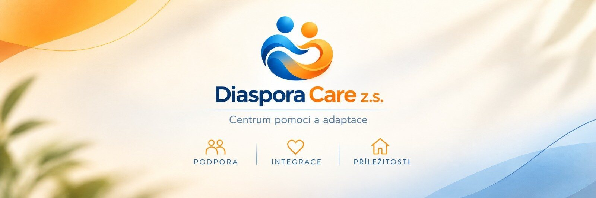

Tereza
Skromné začátky – velký úspěchV roce 2014 Tereza s manželem pomáhala rodině Hanny, která přijela z Donbasu. Poskytla jí práci a zajistila potřebné materiální věci.
Hanna
Diaspora Care z.s. pomáhá cizincům v Česku zabydlet se na novém místě: zorientovat se v institucích, najít bydlení a práci, procvičovat češtinu a získat podporu v těžké chvíli.
Odpovězte na tři krátké otázky a ukážeme vám, s čím vám můžeme pomoci. Odpovědi se nikam neodesílají, dokud se sami nerozhodnete nám napsat.
Diaspora Care z.s. je neziskový a nepolitický spolek se sídlem v Brně. Pomáháme cizincům v Česku s adaptací a začleněním do společnosti, chráníme jejich práva a důstojnost a podporujeme dobré sousedské vztahy s místními.
Někteří z nás sami začínali život v Česku od nuly. Proto víme, jak důležité je mít vedle sebe člověka, který vyslechne a poradí.
Vyslechneme, poradíme a budeme při vás v těžké situaci.
Pomůžeme se zorientovat v institucích, jazyce a každodenním životě v Česku.
Podpoříme vás při hledání bydlení, práce a svého místa v nové společnosti.
Od osobní pomoci k silnější komunitě
Jedna pomoc mění život
Pomoc roste, je nás víc
Velký příliv uprchlíků z Ukrajiny
Vzniká Diaspora Care z.s. a pomoc pokračuje…
V roce 2014 Tereza s manželem pomáhala rodině Hanny, která přijela z Donbasu. Poskytla jí práci a zajistila potřebné materiální věci.
HannaOd roku 2014 žije a pracuje v Česku. Naučila se český jazyk a poznala české reálie. Dnes pomáhá s adaptací lidem, kteří přijeli do Česka hledat nový domov.
V roce 2022 se zapojila do pomoci uprchlíkům z Ukrajiny. V roce 2024 tak pomohla i Táně s jejími prvními kroky v Česku.
TáňaPřijela s manželem a nemocnou maminkou z východu Ukrajiny. V Česku se rychle naučila jazyk, začala pracovat a s pomocí druhých zajistila léčbu své maminky.
Spojili jsme své sílyRozumíme vašim pocitům. Víme, čeho se bojíte. Umíme pomoct.
Kdysi někdo pomohl nám. Teď pomáháme my. Možná jednou i vy předáte dobro dál.
Vyberte téma a dozvíte se víc. Pokud nevíte, kde začít, prostě nám napište.
Pomůžeme pochopit, jak fungují úřady, zdravotní péče, sociální zabezpečení a vzdělávání v Česku, kam se obrátit a co si připravit.
Tlumočení a překlady v běžných životních situacích, doprovod na úřady, k lékařům a do dalších institucí — prostřednictvím kvalifikovaných odborníků.
Pomůžeme vám zorientovat se ve vaší právní otázce a najít profesionálního právníka, pokud je potřeba.
Konzultace a pomoc při hledání vhodného bydlení, při jednání s pronajímateli a při prevenci ztráty bydlení, včetně hmotné podpory.
Pomůžeme vám zorientovat se na českém trhu práce: kde hledat práci a jak začít.
Psychologické konzultace, arteterapie a podpůrné programy pro lidi, kteří prošli traumatickou či jinou závažnou životní zkušeností — prostřednictvím kvalifikovaných odborníků.
Podpora lidí, kteří procházejí onkologickou či jinou náročnou léčbou, a jejich blízkých: doprovod a pomoc během léčby, operací a rehabilitací.
Pomáháme rodinám, dětem a mládeži z řad migrantů se začleněním do vzdělávacího systému, s komunikací se školou a s orientací v české kultuře a prostředí.
Pořádáme setkání k procvičování českého jazyka — v klidné a přátelské atmosféře.
Podporujeme mezigenerační a mezikulturní dialog a dobré sousedské vztahy mezi cizinci a většinovou společností.
Od začátku roku 2022 — ještě před oficiální registrací — pomáháme lidem, kteří přišli do Česka. Tady je, co se podařilo.
Počet příběhů podle oblastí. Jednomu člověku jsme často pomáhali v několika oblastech zároveň.
Údaje jsou souhrnné: nezveřejňujeme jména ani jiné osobní údaje.
Podělte se o dojem, nápad nebo připomínku. Ohlasy se na webu zobrazí až po kontrole moderátorem.
Krátké fráze pro úřad, lékaře, školu, bydlení a práci. Klikněte na reproduktor a uslyšíte výslovnost, nebo si frázi zvětšete a ukažte ji druhé straně.
Ve vašem prohlížeči není k dispozici český hlas — frázi si můžete zvětšit a ukázat ji druhé straně.
Tísňové volání: 112 · Záchranná služba: 155
Procvičování češtiny, sousedská setkání a další akce.
Otevřeně ukazujeme, kdo jsme a jak naše práce funguje.
Diaspora Care z. s. je spolek zapsaný ve spolkovém rejstříku vedeném Krajským soudem v Brně (L 32394), IČO 30061563. Jsme neziskoví a nepolitičtí.
Fungujeme z dotací, grantů a darů. Zisk se nerozděluje mezi členy ani vedení — všechny prostředky slouží výhradně k naplňování účelu spolku.
Jsme otevřeni spolupráci s veřejnou správou, zdravotnickými zařízeními, školami, zaměstnavateli a dalšími neziskovými organizacemi.
Oficiální znění stanov v češtině.
Nemusíte být právník ani psycholog, abyste mohli pomáhat. Oceníme váš čas, znalost jazyků a chuť podpořit člověka vedle sebe.
Fungujeme díky dotacím, grantům a darům. Každý příspěvek jde na pomoc konkrétním lidem — těm, kteří v Česku teprve začínají.
Spolek teprve začíná — níže je ukázka, jak zde budou novinky vypadat.
Napište nám, s čím potřebujete pomoct nebo jak chcete pomoci vy. Odpovíme e-mailem a poradíme, jak začít.